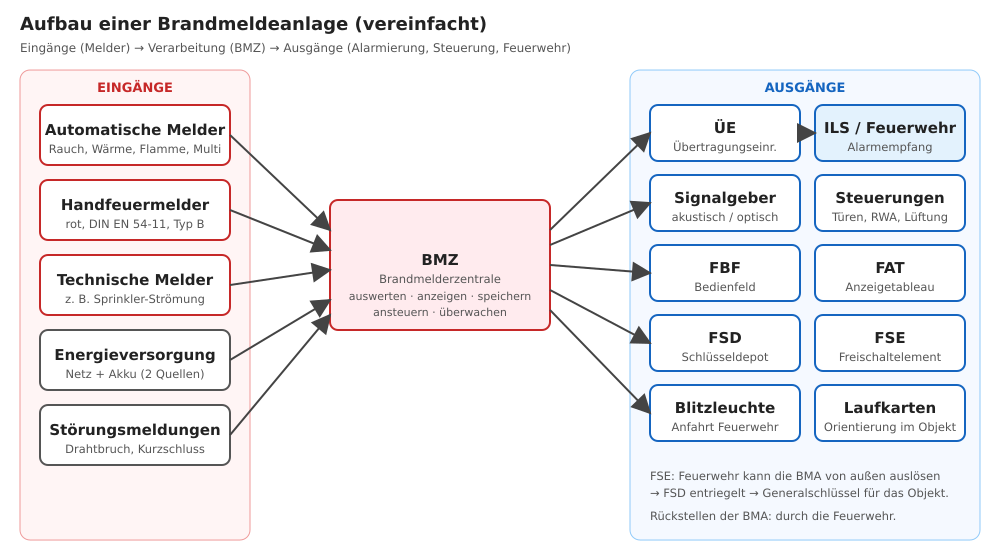

BS1 BAYREUTH · INFORMATIONSELEKTRONIKLF
9 · Brandmeldeanlagen · Infoblatt 2 · zu LS 2
IB 2 – Aufbau einer BMA und Feuerwehrperipherie

Komponenten
| Komponente | Kurz | Aufgabe |
|---|---|---|
| Brandmelderzentrale | BMZ | Nimmt Meldungen auf, wertet aus, zeigt an, speichert und steuert programmierte Aktionen. Sie überwacht alle Leitungen auf Störung. Sie hat zwei unabhängige Energiequellen: Netz über einen eigenen, gekennzeichneten Stromkreis und einen Akku. |
| Übertragungseinrichtung | ÜE | Leitet den Alarm automatisch an die ILS (Feuerwehr) weiter. Die Anforderungen stehen in den TAB. |
| Feuerwehr-Bedienfeld | FBF | Damit bedient die Feuerwehr die Anlage (z. B. Akustik ab, ÜE ab, BMZ rückstellen). |
| Feuerwehr-Anzeigetableau | FAT | Zeigt der Feuerwehr den ersten Alarm und den genauen Ort (Meldergruppe/Melder). |
| Feuerwehr-Schlüsseldepot | FSD | Tresor an der Außenwand mit dem Objektschlüssel. Im Alarmfall wird die Außentür entriegelt. Die Innentür lässt sich nur mit der regionalen Feuerwehrschließung öffnen. |
| Freischaltelement | FSE | Damit kann die Feuerwehr die BMA von außen auslösen, z. B. wenn sie ohne automatischen Alarm ins Gebäude muss. Dabei wird das FSD freigegeben. |
| Blitzleuchte | – | Zeigt der anfahrenden Feuerwehr den Zugang (Feuerwehr-Anlaufstelle). |
| Signalgeber | – | Alarmieren die Personen im Gebäude akustisch und/oder optisch. |
| Brandfallsteuerungen | – | z. B. Brandschutztüren schließen, Lüftung aus, RWA öffnen, Aufzüge in die Evakuierungsebene. |
| Laufkarten | – | Zeigen der Feuerwehr den Weg zum auslösenden Melder. |
Schaltzeichen (Auswahl, nach DIN 14034-6)
| Symbol | Bedeutung | Symbol | Bedeutung | |
|---|---|---|---|---|
| ▢ BMZ | Brandmelderzentrale | ▢ FSD | Feuerwehr-Schlüsseldepot | |
| ▢ FBF | Feuerwehr-Bedienfeld | ▢ FAT | Feuerwehr-Anzeigetableau | |
| ▢ V | Verteiler | ▢ Z | Zentrale allgemein |
Weitere Melder-Symbole findest du im Skript (S. 4–9) und im Zeichensymbole-Prospekt.
Ablauf im Alarmfall (Kurzform)
Melder erkennt Brand → BMZ wertet aus → interne Alarmierung → ÜE meldet an die ILS → Steuerungen und Blitzleuchte → FSD entriegelt → Feuerwehr findet den Melder über FAT und Laufkarte → Brandbekämpfung → Rückstellung durch die Feuerwehr → Eintrag ins Betriebsbuch.
Merke: Die BMZ braucht zwei unabhängige Energiequellen. Der Ausfall einer Quelle wird angezeigt und darf die Funktion nicht beeinträchtigen.